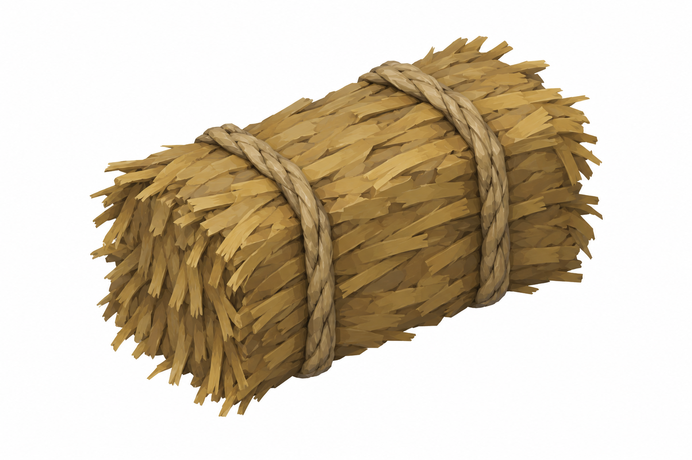
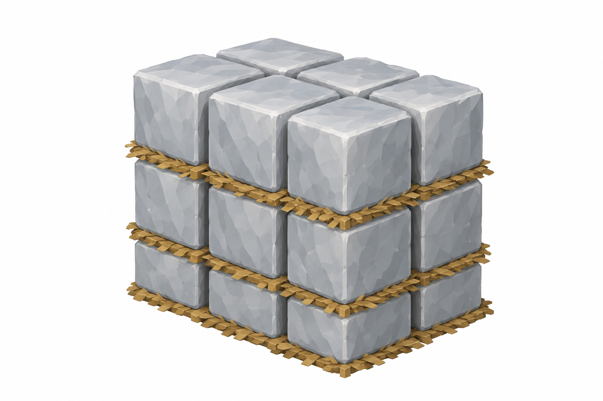
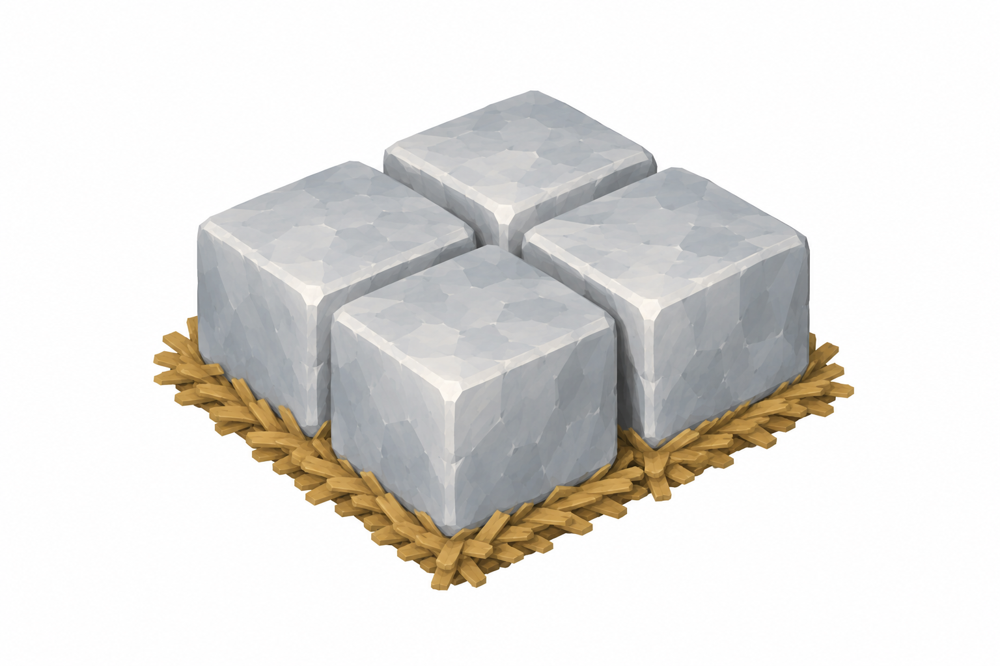
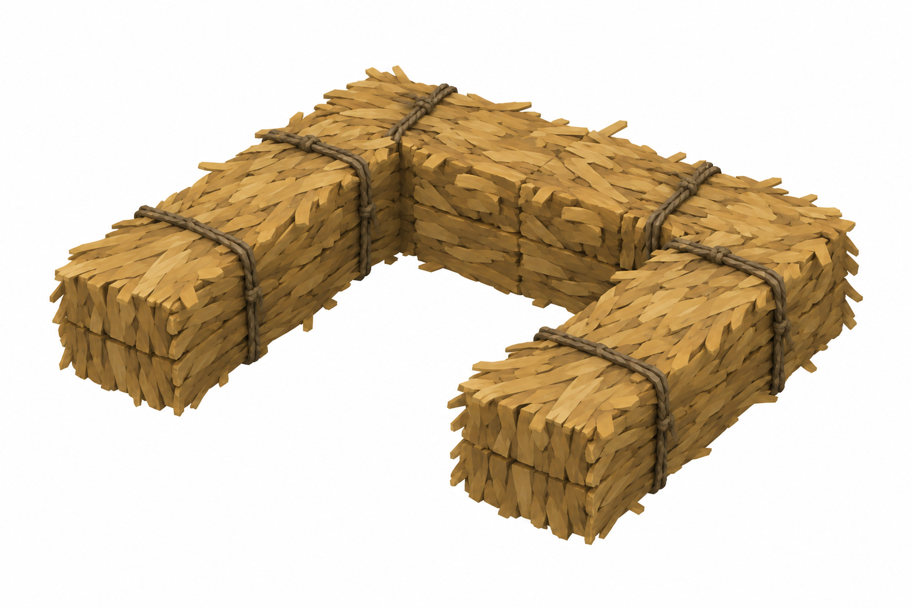
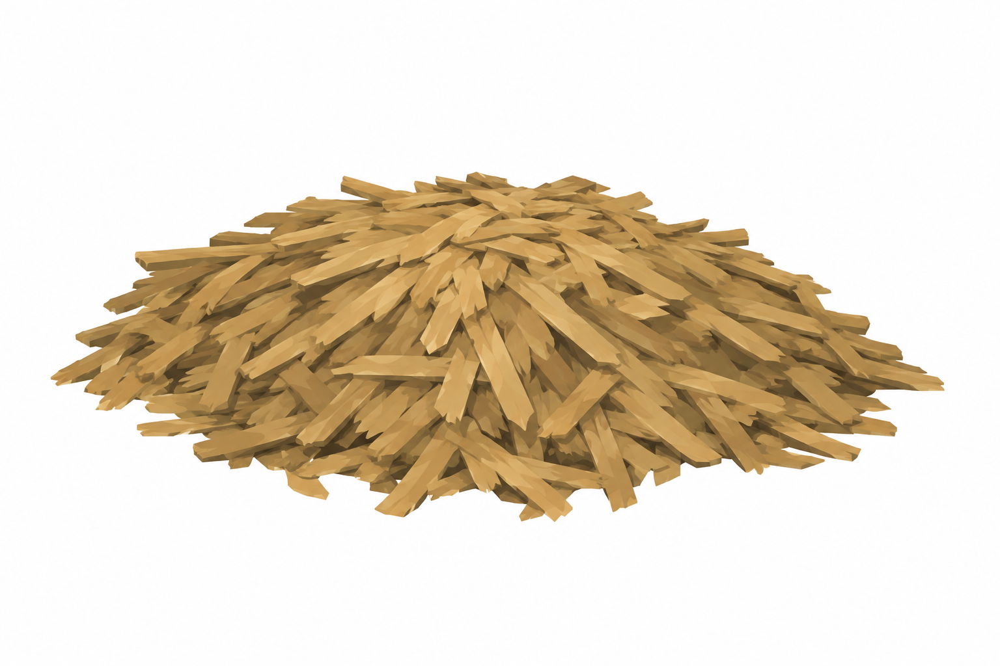
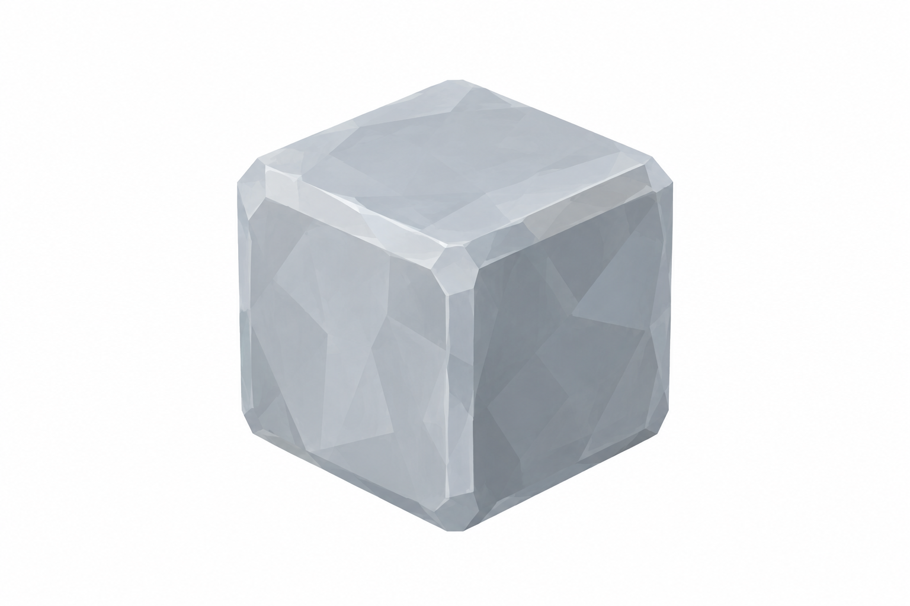

Görseller tasarım referansıdır. Ölçüler hedef sayılarıdır; raster oranları yaklaşık, gerçek mesh/Unity fit doğrulanmadı. Tripo'ya geçilmedi. Git/Jira gönderimi bu taslak için yapılmadı.
Oda yerleşimi / shared Veil stone
151full-size taş ailesi kullanılır; mini dekoratif taş kaldırıldı. 151 üç varyantı düzeltilmiş taslak referans olarak kullanılır; bu yeni revizyonların görsel onayı beklenir. Yeni chest/barrel/light yok. Ice neutral matte; violet sadece oda ışığı. Layoutşema, scene doğrulaması değil.
Tekil45° referanslar

StrawTruss · 1 ×0.5 ×0.45mStyle/semantic review completed; exact proportions and mesh fit remain unverified.
TallIceStack · 1.5 ×1 ×1.6mStyle/semantic review completed; exact proportions and mesh fit remain unverified.
LowIceStack · 1 ×1 ×0.6mStyle/semantic review completed; exact proportions and mesh fit remain unverified.
StrawNest · 1.4 ×1 ×0.35mStyle/semantic review completed; exact proportions and mesh fit remain unverified.
LooseStraw · 1.2 ×0.9 ×0.3mStyle/semantic review completed; exact proportions and mesh fit remain unverified.
IceBlock · 0.5m cubeStyle/semantic review completed; exact proportions and mesh fit remain unverified.